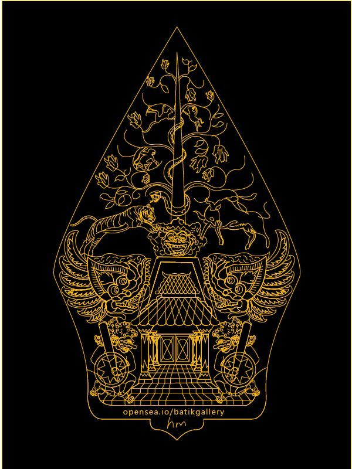

Sejarah Indonesia
Sejarah Indonesia
Imperialisme zaman sekarang berbuahkan “negeri-negeri mandat” alias “mandatgebieden”, daerah-daerah pengaruh “alias” “involedssferen” dan lain sebagainya, sedang di dalam sifatnya menaklukkan negeri orang lain, imperialism itu berbuahkan negeri djajahan-koloniasa-bezit H.A. Notosoetardjo -Bung Karno di hadapan Pengadilan Kolonial .1963
Di dalam sejarah bangsa-bangsa di dunia dikenal adanya masa penjelajahan samudra. Aktivitas penjelajahan samudra ini dalam rangka untuk menemukan dunia baru. Aktivitas penemuan dunia baru ini tidak terlepas dari motivasi dan keinginannya untuk bertahan hidup, memenuhi kepuasan dan kejayaan dalam kehidupan di dunia. Yang dimaksud dunia baru waktu itu pada mulanya adalah wilayah atau bagian dunia yang ada di sebelah timur (timurnya Eropa). Wilayah itu sebagai penghasil bahan-bahan yang sangat diperlukan dan digemari oleh bangsa-bangsa Eropa. Bahan-bahan yang dimaksudkan itu adalah rempah-rempah seperti cengkih, lada, dan pala.
Bertahun-tahun lamanya Laut Tengah menjadi pusat perdagangan internasional antara para pedagang dari Barat/Eropa dan Timur. Salah satu kota pusat perdagangan itu yang terkenal adalah Konstantinopel. Banyak jenis komoditas di pasar Konstantinopel.
Berita keberhasilan Columbus menemukan daerah baru, membuat penasaran raja Portugis (sekarang terkenal dengan sebutan Portugal), Manuel l. Raja Portugis tersebut kemudian memanggil pelaut ulung Portugis bernama Vasco da Gama untuk melakukan ekspedisi menjelajahi samudra mencari Tanah Hindia yang merupakan daerah penghasil rempah-rempah.
Sebelum orang-orang Portugis berangkat memulai penjelajahan samudra, sebenarnya sudah lebih dulu Spanyol berangkat berlayar mencari tempat penghasil rempah-rempah. Orang-orang Spanyol dan Portugis dapat dikatakan sebagai pelopor dalam pelayaran dan penjelajahan samudra untuk mencari daerah baru penghasil rempah-rempah di timur (disebut Tanah Hindia).
Portugis sudah memasuki wilayah Kepulauan Nusantara tahun 1511, kemudian sampai ke Maluku tahun 1521. Begitu juga Spanyol memasuki Maluku pada tahun 1521.
Perlu dipahami bahwa setelah Portugis berhasil sampai di kepulauan Maluku, aktif mengadakan perdagangan dengan penduduk setempat. Kedatangan Portugis ini telah mendorong perdagangan rempah-rempah semakin meluas.
Seperti telah dijelaskan di muka bahwa tujuan kedatangan orang-orang Eropa ke dunia timur antara lain untuk mendapatkan keuntungan dan kekayaan. Tujuan ini dapat dicapai setelah mereka menemukan rempahrempah di Kepulauan Nusantara. Dalam menjalankan tugas, VOC ini memiliki beberapa kewenangan dan hak-hak antara lain:
Pada tahun 1614 Pieter Both digantikan oleh Gubernur Jenderal Gerard Reynst (1614-1615). Baru berjalan satu tahun ia digantikan gubernur jenderal yang baru yakni Laurens Reael (1615-1619). Pada masa jabatan Laurens Reael ini berhasil dibangun Gedung Mauritius yang berlokasi di tepi Sungai Ciliwung.
Pada abad ke-17 hingga awal abad ke-18, VOC mengalami puncak kejayaan. Penguasa dan kerajaan-kerajaan lokal di Nusantara umumnya berhasil dikuasai. Kerajaan-kerajaan itu sudah menjadi bawahan dan pelayan kepentingan VOC. Jalur perdagangan yang dikendalikan VOC menyebar luas membentang dari Amsterdam, Tanjung Harapan, India sampai Irian/Papua. Keuntungan perdagangan rempah-rempah juga melimpah.
Liberte (kemerdekaan), egalite (persamaan), dan fraternite (persaudaraan). Berdasarkan ide dan paham yang digelorakan dalam Revolusi Prancis itu, maka kaum patriot menghendaki perlunya negara kesatuan. Bertepatan dengan keinginan itu pada awal tahun 1795 pasukan Prancis menyerbu Belanda.
Dalam rangka melaksanakan tugas mempertahankan Jawa dari serangan Inggris, Daendels melakukan langkah-langkah:
Daendels juga melakukan beberapa tindakan yang dapat memperkuat kedudukannya di Nusantara. Beberapa tindakan yang dimaksud adalah sebagai berikut.
Daendels berusaha memberantas berbagai penyelewengan dengan mengeluarkan berbagai peraturan. (a) Daendels membentuk tiga jenis peradilan: (1) peradilan untuk orang Eropa, (2) peradilan untuk orang-orang Timur Asing, dan (3) peradilan untuk orang-orang pribumi.
Beberapa kebijakan dan tindakan Daendels itu misalnya:
Pada bulan Mei 1811, Daendels dipanggil pulang ke negerinya. Ia digantikan oleh Jan Willem Janssen. Janssen dikenal seorang politikus berkebangsaan Belanda.
Sebagai imbalannya Hamengkubuwana III harus menandatangani kontrak bersama Inggris. Isi politik kontrak itu antara lain sebagai berikut.
Beberapa kebijakan dan tindakan yang dijalankan Raffles sebagai berikut.